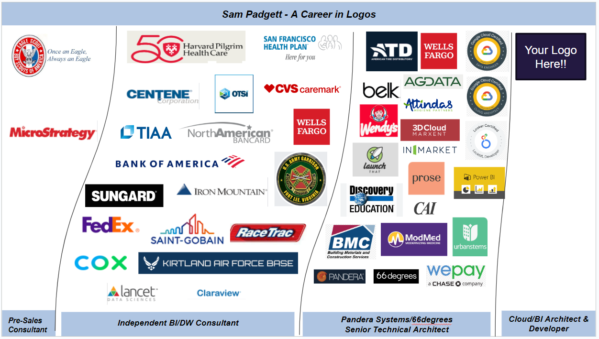

Architecting, designing, and building out BI dashboard applications has been my primary focus over the past decade. Platforms include Looker, Power BI, MicroStrategy, and Tableau. Deployments have often required upstream data delivery and modeling work to provide a consumer friendly dimensional schema.
I've also had the opportunity to do data pipeline work with python and have obtained 4 Google Cloud Certifications.
I'm on deck to take the dbt Analytical Engineering certification in a couple weeks.

This is one of several dashboards a colleague and I built for an online subscription retailer of cpg products. Notable features include YOY reporting capability, a number of time period specific measures, and innovative use of the manifest file for "don't repeat yourself" coding of time period variables and formatting snippets.
I was Architect and primary developer on this 45 dashboard-page project that was sourced from 12 fact tables and
40 dimensional/lookup Tables. It features a custom floating filter panel and required 450 measures, and 100 bookmarks.
This was the first Power BI deployment for the client and required capacity analysis, gateway deployment, and knowledge transfer on managing the deployed solution.
On this project, a colleague and I we're tasked with assessing the health of an existing Looker deployment, with priority given to improving the response on a critical KPI dashboard. Per our recommendation, we worked with the client to refactor their delivery pipeline for the underlying datasets, moving the logic from Looker Derived tables to dbt, with addition of some critical materializations along the way.
Thoughts on the limitations of "vanilla" Looker dashboards and the option to leverage Looker for governance, security, and a centralized reporting schematic layer, while delegating the dashboard delivery to alternative tools.

This project was a "lift and shift" from Data Studio for a SAAS provider.

Served as data engineer on project to extract email campaign data from Salesforce/Pardot via python script with restAPI calls and processed data uploads to Amazon S3.
Worked with a client to refactor portions of their dbt data delivery pipeline. Advised on modularization strategy enhancing component re-use, and migration of complex business logic in Looker derived tables to dbt, leveraging dbt's incremental materialization capabilities.
Screen shots of brand share dashboard reporting solution deployed via MicroStrategy
Currently hold 5 Google Cloud certifications
- LookML Developer
- Professional Data Engineer
- Associate Cloud Engineer
- Professional Cloud Architect
- Professional Cloud Database Engineer
Example of dashboard conversion from Looker to Tableau.